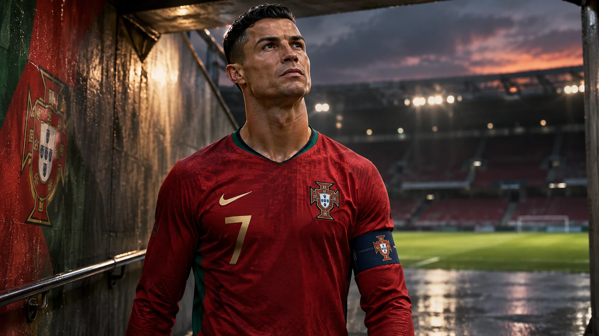
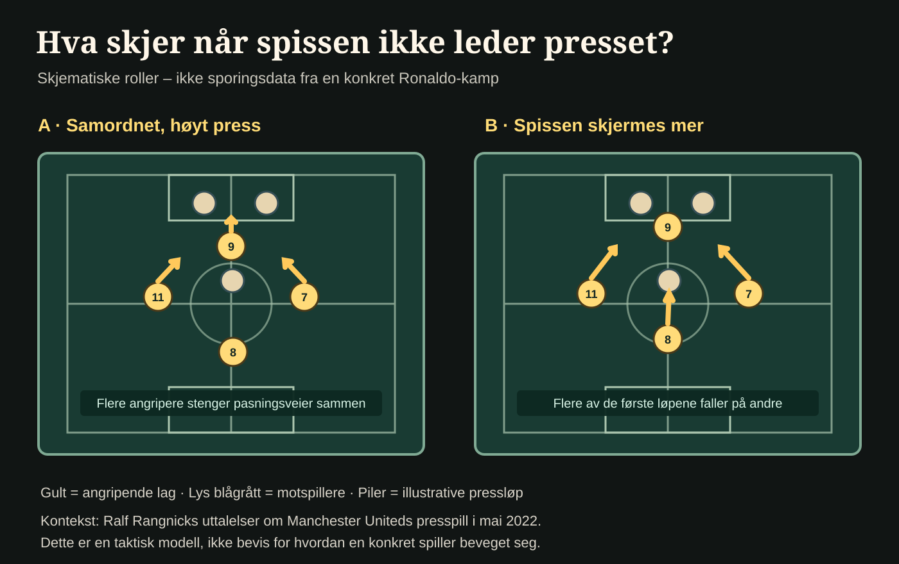
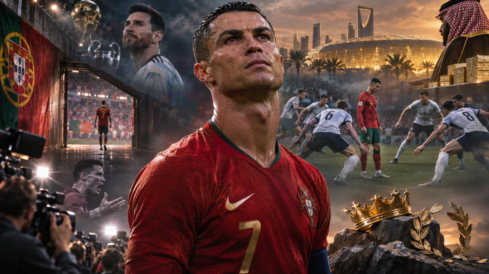

Sport · Analyse · Publisert
Ronaldo var en gigant. Men hvem tok løpene for ham?
Cristiano Ronaldo var sammen med Lionel Messi sin generasjons største angrepsspiller. Han var et fysisk fenomen, men sjelden en pådriver i presspillet. Konflikter, skattesak og astronomiske inntekter i Saudi-Arabia gjør landslagsavskjeden mer sammensatt enn rekordene.

Det eneste han ikke kunne løpe fra
I en videohilsen 5. november kunngjorde Cristiano Ronaldo at tiden var kommet for å gi fra seg Portugals nummer sju. Han har spilt 234 landskamper og scoret 146 mål. Ingen mann har flere landskamper eller landslagsmål. Han varsler slutten på en landslagskarriere med EM-gull i 2016, Nations League-titler i 2019 og 2025 og seks VM-sluttspill. Det er ikke rom for å bagatellisere størrelsen på det.
Kildegrunnlag: Primærkilde: FIFA – Ronaldo avslutter landslagskarrieren, 5. november 2026. Statistikk bekreftet av FIFAs karriereoppsummering.
Karrieren i fire tall
Kilder: FIFA, 5. november 2026 og FIFAs spillerprofil. Tallene beskriver landslagskarrieren, ikke alle klubbmål.
Fra slutten av 2000-tallet og gjennom nesten hele 2010-tallet var Ronaldo og Lionel Messi målestokken for alle offensive fotballspillere. Messi kunne tilsynelatende løse et helt forsvar med en vending og en pasning. Ronaldo dyrket et annet ideal: farten, spensten, avslutningen, timingen. Han utviklet seg fra driblende kantspiller til en ekstremt effektiv avslutter. Var han verdens beste spiss i alle disse årene? Slike spørsmål har ingen objektiv fasit. Men han var ubestridelig blant de aller fremste.
Ronaldo og Portugal: fem milepæler
Åpne hvert punkt for bakgrunnen. Dette er et utvalg, ikke hele karrieren.
Debut på landslaget
Som 18-åring kom Ronaldo inn mot Kasakhstan. FIFAs karriereoversikt.
EM-gull med Portugal
Ronaldo var kaptein da Portugal vant sitt første EM. FIFA.
To Nations League-titler
Portugal vant turneringen begge årene. FIFAs oppsummering.
Forbundet kunngjør disiplinærreaksjon
Etter konflikten rundt en landslagssamling ble han ilagt 30 dagers utestengelse og en bot. Reuters. En disiplinærreaksjon må ikke forveksles med den senere pensjoneringsbeslutningen.
Avslutter landslagskarrieren
Ronaldo kunngjorde at han gir fra seg Portugals nummer sju etter 23 år. FIFAs bekreftelse.
Atlet, men ingen pressmaskin
Få har arbeidet hardere med sin egen fysikk. Her ligger også paradokset: Han var en av fotballens fremste atleter, men ikke en av dem som arbeidet hardest når motstanderen hadde ballen. Et lag som presser høyt, trenger en spiss som løper for å stenge pasningsveier, jager midtstoppere og setter i gang gjenvinningen. Ronaldo hadde andre oppgaver, og krevde i praksis at laget tilpasset seg hans styrker.
Da Ralf Rangnick skulle innføre et mer kollektivt og aggressivt press i Manchester United, møtte han nettopp dette problemet. I mai 2022 sa Rangnick at Ronaldo ikke var noen «pressmonster», heller ikke som ung, og at laget måtte inngå kompromisser. Det er en treffende beskrivelse av begrensningen: Ikke at Ronaldo bokstavelig talt aldri presset en meter, men at han gjennomgående tok en langt mindre del av forsvarsarbeidet enn toppfotballens pressfilosofi krever.
Kildegrunnlag: Kilde: The Guardian, 21. mai 2022 – Rangnicks vurdering. Han beskrev også utfordringer med flere spillere; sitatet er ikke en måling av Ronaldos løpsmengde.


Det betyr ikke at Ronaldo på sitt beste ville vært verdiløs i dagens fotball. En så produktiv målscorer ville fremdeles ha vært ettertraktet. Men han måtte ha blitt skjermet, eller endret spillestilen. Den aldrende Ronaldo ville hatt enda større problemer i et lag der alle elleve må forsvare seg som én enhet. Moderne fotball er mer enn en konkurranse om å løpe fortest og hoppe høyest. Det er en koreografi uten ball, hvor den første løpsduellen ofte tas for at en lagkamerat skal kunne vinne den neste. Ronaldo var en fenomenal atlet. Som førsteforsvarer var han noe helt annet.
Hva kreves av en spiss uten ball?
Utforsk tre oppgaver i et høyt press. Dette er fotballfaglige prinsipper, ikke individuell løpsstatistikk.
Historisk kontekst: Ralf Rangnicks kommentarer om Uniteds pressspill i 2022. Illustrativ analyse, ikke Rangnicks egen taktikkmodell.
Når stjernen blir større enn rammene
Konflikten med Erik ten Hag i Manchester United i 2022 viste hva som kunne skje når Ronaldo ikke lenger var garantert hovedrollen. Treneren bekreftet at han nektet å bli byttet inn mot Tottenham. Ronaldo forlot stadion før kampslutt og ble tatt ut av troppen til neste kamp. Det er en dokumentert hendelse, ikke bare en tolkning av kroppsspråk eller rykter om garderoben.
Kildegrunnlag: Kilde: BBC Sport – Ten Hag om Tottenham-episoden, 21. oktober 2022.
Det finnes også andre hendelser som kompliserer bildet. I 2019 erkjente Ronaldo skattesvik i en spansk straffesak og aksepterte en avtale om å betale 18,8 millioner euro og få en betinget fengselsstraff. Slike saker må ikke blandes sammen med påstander om hva slags menneske han er privat. Men de hører med når et offentlig ettermæle skal vurderes, og de bidrar til at historien ikke kan fortelles utelukkende som en heltefortelling.
Kildegrunnlag: Kilde: Euronews/Reuters – skatteavtalen i Spania, 22. januar 2019.
Saudi-Arabia, pengene og det siste kapittelet
Siden 2023 har Ronaldo spilt for Al-Nassr i Saudi-Arabia. Ifølge Forbes tjente han anslagsvis 300 millioner dollar i løpet av de tolv månedene frem til mai 2026, hvorav 235 millioner dollar var knyttet til fotballen. Dette er anslag før skatt og honorarer, ikke en bekreftet fast årslønn. Summene sier noe om hvor stor en global merkevare han fortsatt er – og hvor langt den siste delen av karrieren ligger fra europeisk toppfotballs sportslige sentrum.
Kildegrunnlag: Kilde: Forbes – anslått inntekt i tolvmånedersperioden til mai 2026. Før skatt og honorarer; ikke bekreftet årslønn.
Saudi-Arabias idrettssatsing kan samtidig ikke beskrives uten den politiske konteksten. Amnesty International beskrev signeringen av Ronaldo som del av et større mønster av «sportsvasking» og oppfordret ham til å rette oppmerksomhet mot menneskerettigheter. Ronaldo har på sin side fremhevet muligheten til å bidra til utviklingen av fotballen og klubben. At han velger å spille der er ikke i seg selv bevis på personlig støtte til myndighetenes politikk. Men med berømmelsen følger også spørsmålene.
Kildegrunnlag: Partskilde: Amnesty International – reaksjon på Al-Nassr-signeringen, 4. januar 2023. Kritikken kommer fra en menneskerettighetsorganisasjon.
Også landslagssortien ble urolig. Etter en strid om rollen hans på Portugal-laget forlot Ronaldo en samling uten tillatelse. Det portugisiske fotballforbundet ga ham i oktober 2026 en 30 dagers utestengelse og en bot på 255 euro. Ronaldo beklaget senere at han forlot lagkameratene; landslagstrener Jorge Jesus bestred at han hadde gitt løfter om spilletid. Begge sider av konflikten er relevante. Det er likevel vanskelig å se bort fra symbolikken: En spiller som hadde vært landslagets ubestridte sentrum, kom i konflikt om nettopp plassen sin i laget.
Kildegrunnlag: Kilde: Reuters – Portugals disiplinærvedtak, 19. oktober 2026.
Ronaldo har også vært lagkaptein, løftet lagkamerater og vært med på å vinne Portugals største titler. Han bør ikke reduseres til én egenskap eller én krangel. Men spørsmålet om lagspillet er ikke dermed borte: Hvor mye måtte medspillerne gi for at hans individuelle talent skulle få maksimal plass – og hva skjedde da målene ikke lenger kunne rettferdiggjøre alt?
Hva bør veie tyngst i Ronaldos ettermæle?
Frivillig refleksjon, ikke en representativ avstemning. Bare ditt lokale svar lagres i nettleseren; ingen fellestall samles inn.
Denne lokale avstemningen trenger JavaScript.
Du valgte:
Dette er ditt eget svar, ikke en telling av andre lesere.

Et uforglemmelig, sammensatt ettermæle
Fotballhistorien vil huske spensten, de ufattelige måltallene, Champions League-kveldene og en profesjonell disiplin som flyttet grensene for hva en angrepsspiller kunne levere. Den vil også huske konfliktene, skattesaken, millionene i Saudi-Arabia og en landslagsavskjed preget av uenighet.
Messi og Ronaldo gjorde hverandre større gjennom rivaliseringen. Men det er ikke sikkert ettertiden vil vurdere dem likt. Ronaldo var kanskje det klareste bildet på den grenseløse individuelle ambisjonen i en lagidrett. På sitt beste gjorde det ham nesten ustoppelig. Mot slutten gjorde det ham vanskeligere å få plass til.
Han fortjener å bli husket som en gigant. Men ikke nødvendigvis med bare varme følelser.